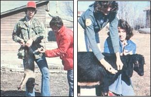

MOTHER's veterinary expert shares the basics on a topic vital to all homestead animal raisers.
Long ago, some observant folks noticed that people who caught certain diseases (such as smallpox) - and lived through the illnesses - never again came down with that same condition. Drs. Edward Jenner and Louis Pasteur later put that principle to work by creating the vaccine . . . a medicine that, because it gives a person a slight case of a particular disease, actually encourages his or her body's natural defense system to develop resistance to any subsequent attack of the ailment. Ever since such preventive medications were put into widespread use, the incidence of many serious human illnesses (including smallpox, diptheria, and polio) has been greatly reduced.
Scientists have created vaccines for many livestock diseases, too. (Indeed, the root word for vaccine, vacca, means cow in Latin . . . and reflects the fact that the first inoculation was derived from the organism which caused cowpox.)
And today, such defense builders are vital aids to anyone who wants to raise healthy livestock. These "miracle" medicines do create one problem, however: There are so darned many vaccines (all wrapped up with big three-dollar names, to boot) that the average beast keeper can hardly make sense of the subject!
For instance, what is a toxoid ... or an antitoxin . . . or passive and active immunity . . . or the difference between live, killed, and attenuated vaccines? And most important, which substances should be used to medicate your critters, and when should the treatment be applied?
In order to clear up some of the confusion surrounding such topics, I've written the following livestock vaccine primer. In this article, I'll explain the various medical terms, share some general rules for setting up your own disease defense program, and even throw in a chart that shows which germ beaters are generally most useful for medicating small homestead livestock animals. After all, animal vaccines are not all that difficult to understand or to administer ... if you know what you're doing.
There are two basic types of disease immunity: passive and active. Passive immunity is resistance that is given to - not developed by - the creature carrying the defense. Such "outside help" provides resistance to a disease in a very short time, but that protection will eventually disappear. In some ways, passive immunity is like a youngster's winter snow fort. The easily erected play castle can provide protection during a short "battle" ... but it will melt away after a few days of sunshine.
The classic example of passive immunity is the disease resistance passed by a mother to her offspring, via the colostrum (first milk). Mankind has created another way of passing on short-term resistance, using antiserum injections. Such medicines (which are made from the blood serum of an animal that already possesses a particular immunity) offer effective quickfix protection against canine distemper, feline panleukopenia, human measles, and many other diseases.
Another category of passive immunity medicines, antitoxins, fight the poisons that some "bad-guy" bacteria produce. . . specifically when such "waste" substances - and not the germs themselves - are deadly. (The relationship between a toxin and its parent bacteria is similar to the connection between thick smoke and fire: The flames cause the billowing clouds . . . but, in many cases, those fumes can be more dangerous than is the blaze itself.)
The members of the Clostridia bacteria family are about the most notorious toxin producers. And the most infamous member of this clan is Clostridium tetani, or tetanus. Anytime one of your critters - especially a horse - gets a severe cut or has open surgery, you should administer tetanus antitoxin to the animal for its immediate protection. (Another common killer "cousin" is Clostridium perfringens, or the overeating disease.)
The animal itself must develop an active immunity. This form of disease resistance is sort of like the left jab/right cross combination I learned as a boy. I haven't had to physically defend myself for some years now, but I believe I could still use the technique effectively . . . if I absolutely had to (well, at least if I were up against a smaller and weaker foe!).
An active immunity takes time to develop, is long-lasting, and is a result of "experience": that is, an animal builds the antibodies that combat the disease only after first catching - and recovering from - the illness. A vaccine, of course, uses this exposure technique to help livestock create disease resistance. Often, though, the critter will require a booster application of the same treatment every year or so, to refortify its disease-fighting ability. (In a similar way, I could very likely use a periodic workout in the gym if I really wanted to be prepared to counter a physical attack.)
Now let's say that you have a litter of newborn puppies, and you want them to develop long-lasting immunities to distemper. Well, you could squirt a strong dose of that virus into the pets' pen and figure that any pooches that survive the resulting mini-epidemic will henceforth have a strong resistance to the disease ... but that solution would be worse than the problem!
In practice, all the viruses used to provide active immunization have been weakened in some manner, to assure that the recipients of the medication will contract only very mild cases of the disease ( if the animals are healthy to begin with) while building up a long-lasting immunity. Therefore, the viruses are most often either already killed . .. or living, but attenuated (cycled through an alternative host or culture until their virulence is substantially lessened) when they are used in a vaccine.
As far as you - the homestead animal raiser - are concerned, though, it's best to let the professional "vaccinologists" worry about which medicines are best made from dead or attenuated (also called MLV, for modified live virus) cultures. Your own vet can help you choose the best treatment for your particular animal and geographic area.
(One last variety of active vaccine that you'll sometimes hear mentioned is a toxoid. Like antitoxins, such remedies combat the toxins of a bacteria rather than battling the virus itself. But, unlike those passive medicines, a toxoid helps an animal develop its own poison-beating ability.)
There are eight important rules that anyone who's planning to set up a vaccination plan for his or her livestock should follow:
[1] Make sure newborn critters get their mother's first milk. The passive immunity given to a baby animal from its mother's colostrum is vital to the youngster's well-being. (And you can insure that Mom will have a high level of resistance to pass on to her babies if you make certain she is both healthy and well vaccinated before she gives birth.)
[2] Develop immunity with a series of vaccines. The newborn's hand-me-down defenses won't last forever, so you should plan to treat each young beast to help it develop an active set of disease-fighting antibodies. In order to accomplish such a goal, you'll need to give the animals a series of two or three shots (or oral medicines) spaced several weeks apart.
The first dose of vaccine will provide any early immunities that might be needed. The second and following shots, on the other hand, will make sure that any resistance-stimulators that may have been inactivated by the maternally given antibodies will have another opportunity to be effective.
[3] Give periodic boosters. Most vaccines need to be repeated periodically. Some (leptospirosis, for example) should be administered every six months . . . others - including several rabies vaccines - last for two or three years ... but, as a rule, the medicines should be readministered on an annual basis.
Don't neglect those regular boosters. Remember, vaccines are preventive medicines. They won't help your livestock much if you use them after the critters get sick!
[4] Keep your animals healthy. If you don't provide the beasts with good nutrition, clean quarters, and a strong program of parasite prevention, you can't expect them to have the energy to develop their own virus fighters. (A left jab/right cross combo isn't going to do you any good in the cruel alleyway of life if you're too weakened by a poor diet, poor living conditions, etc. to put any power behind it!) So remember: There is a wealth of wisdom in keeping your animals healthy.
[5] Pick the correct vaccine. Many vaccines are species-specific. For instance, several of our county's cats were recently vaccinated with a rabies vaccine that was not approved for felines. Instead of being protected from the, deadly disease, these mis treated animals actually came down with rabies! So it's vitally important that you use the right vaccine on your animals.
[6] Treat the vaccine with "Kidd" gloves. You've heard the old saw "When all else fails, read the instructions". Well, when you're using vaccines, read those directions first . . . and follow them! Vaccines can easily be spoiled, so keep your medicines refrigerated and clean, and don't try to "save money" by using the preventives after their expiration dates.
(People who take good care of their livestock already know these truths about vaccine care. In fact, many of my farmer clients always used to insist on carrying my medicine bottles to the barn whenever I drove out to treat their animals. I wondered about this common peculiarity, until I realized that such conscientious animal tenders were just "checkin' up on ol' Doc" .. . to see if I used fresh vaccines and kept the medicines on ice on my way over to their farms.)
[7] Administer the vaccine properly. Do not give an animal a shot or an oral medication until you know exactly what you're doing ... because some vaccines won't work at all if they're given in the wrong manner. So if the directions call for an intramuscular shot, be sure you're not accidentally giving the critter a subcutaneous injection. (To find out how to properly give livestock all types of shots, see my article "You Can Too Give That Animal an Injection!" in MOTHER NO. 53, pages 92-97.)
Remember, too, to give precisely the prescribed dose of medicine. It's very poor economy to risk your beast's health by trying to reduce the called-for dosage. And use disposable needles and syringes ... or glass syringes that have been sterilized between uses by boiling. Alcohol, and other chemicals that are sometimes used to clean vaccination equipment, can make some of the medicines worthless!
[8] Get your veterinarian to help you set up your vaccination program. This is the last of my eight guidelines, but it could be the most important: A poor plan may be completely ineffective . . . might give you a false sense of security . . . or could even (as with the rabid cats mentioned earlier) be dangerous to your livestock.
The proper program for your individual homestead, of course, will depend on what type of - and how many - animals you're raising, where you live, how often you buy and sell livestock, What functions the critters serve, whether or not you go on the show circuit, how healthy your beasts are to begin with, and more. So dish out the dough for some office time at the vet's to work out the right ongoing plan for your beasts. Such an action will be good for your animals, and - in the long run - for your wallet as well.
EDITOR'S NOTE: Issue 53 (which contains Randy's article "You Can Too Give That Animal an Injection!") is available from THE Mother Earth News(restricted), P.O. Box 70, Hendersonville, North Carolina 28791. Dr. Kidd has also written two other line articles on medicating homestead livestock: "Restrain That Beast!" (MOTHER NO. 52, page 84) and "Be Your Own 'Animal Medicine Man' " (MOTHER NO. 54, page 76). Back issues cost $3.00 each . . . plus $1.00 shipping and handling per order.
In addition, N. Bruce Haynes's Keeping Livestock Healthy: A Veterinary Guide provides a very thorough discussion of animal diseases, vaccines, and treatments. Dr. Haynes's book is available from bookstores or - for $9.95 plus 95 cents shipping and handling - from Mother's Bookshelf, P.O. Box 70, Hendersonville, North Carolina 28791.
|
(PHOTOS BY THE AUTHOR) LEFT: The best passive immunity medicine is a mother's first milk. RIGHT: You can give many poultry vaccines by adding the medicines to the birds' feed or water. (Find out how to properly administer each medication. |
(PHOTOS BY THE AUTHOR.) LEFT: Many critters ? such as this restrained young pig ? should start receiving immunizations at an early age. . . before their maternally given resistance have begun to wear off. RIGHT: A goat gets a subcutaneous (Sub-Q) injection. |
 |